Living Castles
Što predstavlja projekt "Living Castles"?
U središtu projekta »Living Castles« je očuvanje i vrednovanje ljetnikovaca/dvoraca kroz razvoj zajedničke prekogranične turističke ponude te integraciju inovativnih aktivnosti očuvanja i predstavljanja baštine.
Koji su glavni ishodi projekta "Living Castles"?
Koja je glavna vodilja projekta?
Glavna vodilja projekta je osnivanje zajedničke robne marke vezane za dvorce i ljetnikovce , koja će pomoći u boljoj prepoznatljivosti i promociji, s željom da se isti u zemlji i inozemstvu predstavljaju kao zajednički turistički proizvod po uzoru na dvorce južne Češke i bavarskih dvoraca. Gradovi će biti opremljeni zajedničkim pločama označavanja, provodit će se zajednička promocija te skupni tematski događaji, što će obogatiti stalnu ponudu.
Na što se fokusira projekt "Living Castles"
Dvorci su spomenički i kulturno zaštićeni objekti, zbog čega je njihova namjena često rigidno određena, pa su promjene teške i skupe. Projekt će posvetiti puno pažnje traženju rješenja kako s malim investicijama i modernom IKT opremom popuniti praznine i gradovima udahnuti novi život, a posjetiteljima bolje iskustvo.
 
